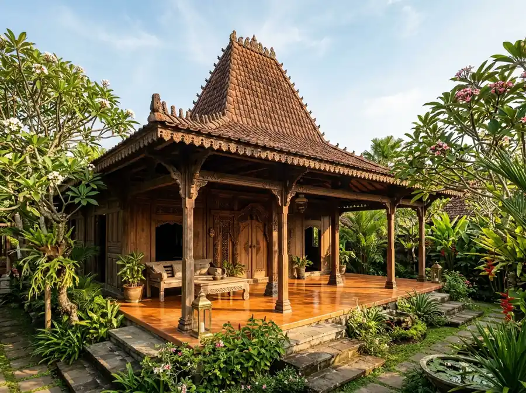
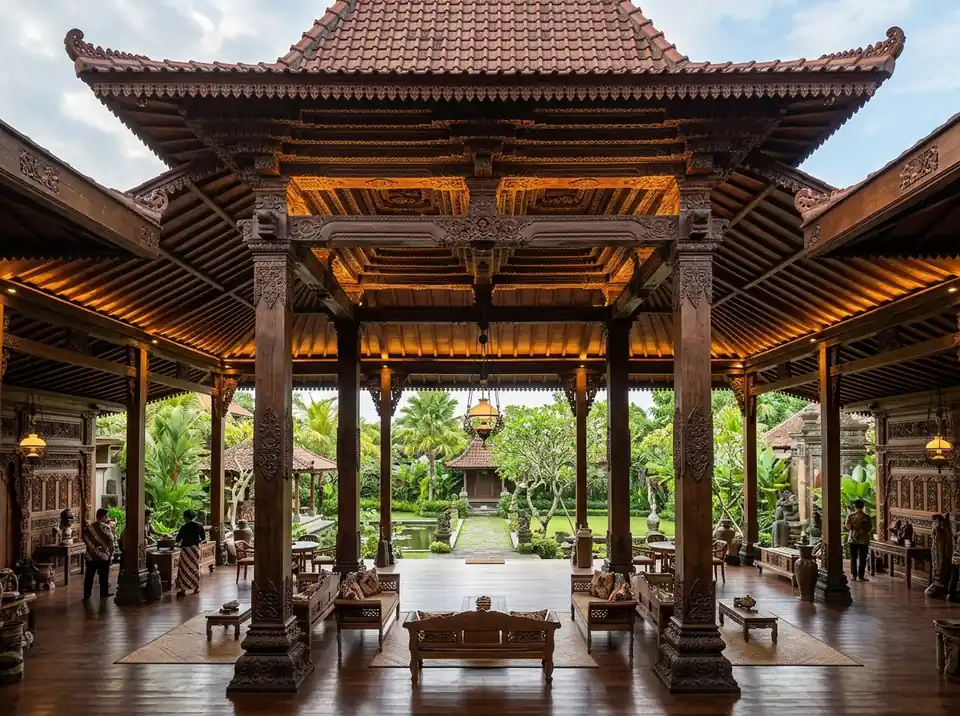
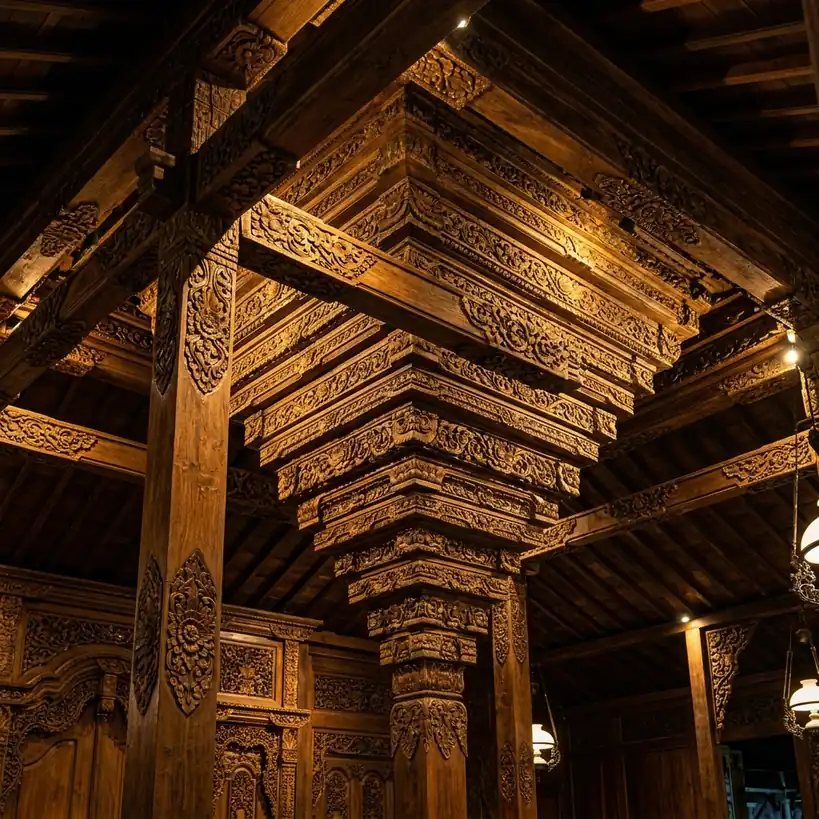
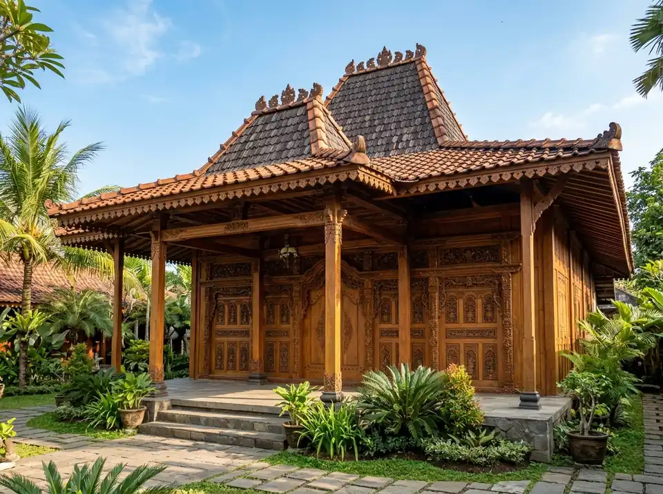
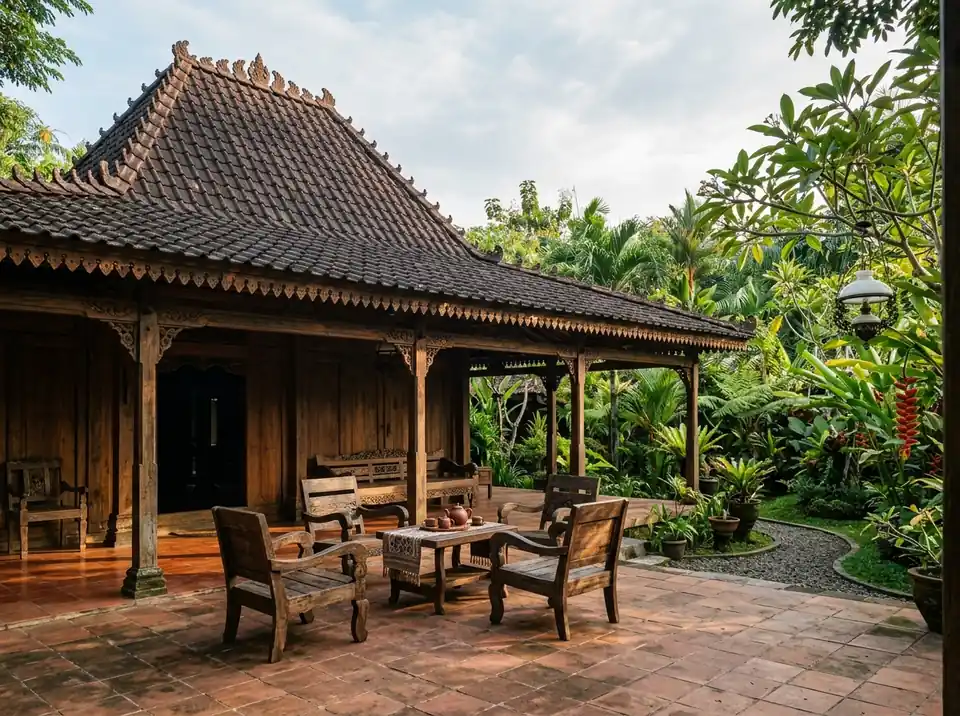
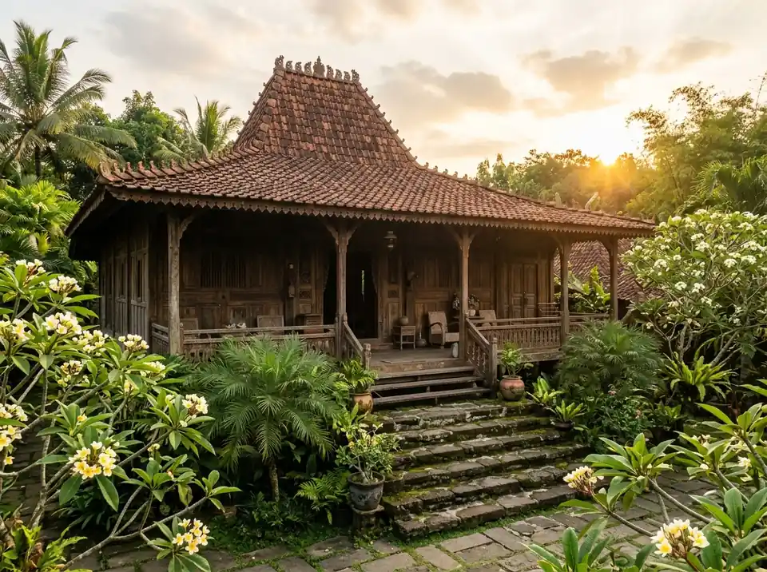
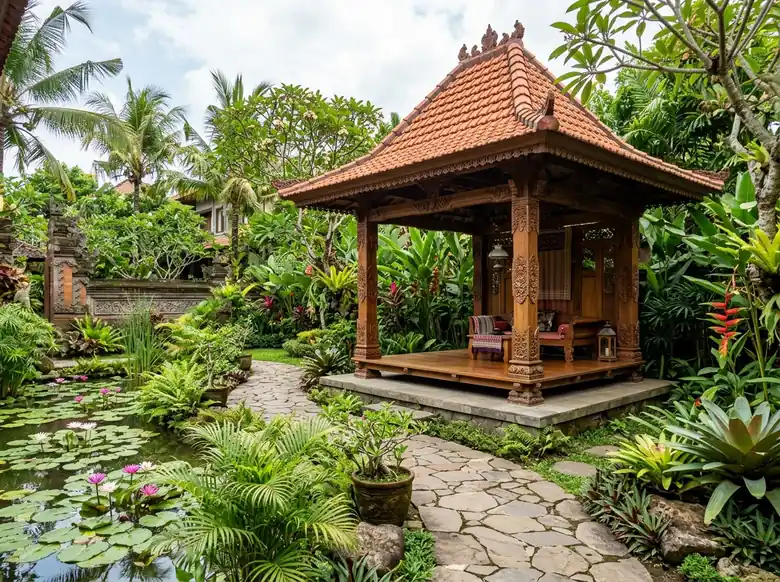

Dokumentasi Nyata
Koleksi Instalasi & Detail Seni Kayu Jati
Klik pada gambar untuk memperbesar tampilan foto melalui lightbox detail.







Semua foto di atas merupakan dokumentasi asli pengerjaan dan perakitan tim Griya Joglo Trayang. Ingin melihat video proses bongkar pasang terbaru? Minta Video Dokumentasi via WhatsApp
Mulai Proyek Anda
Tertarik dengan Salah Satu Gaya Bangunan di Atas?
Konsultasikan rencana lokasi, dimensi tanah, dan preferensi desain Anda. Tim kami akan menyiapkan estimasi denah dan biaya secara transparan.
Konsultasi Proyek via WhatsApp